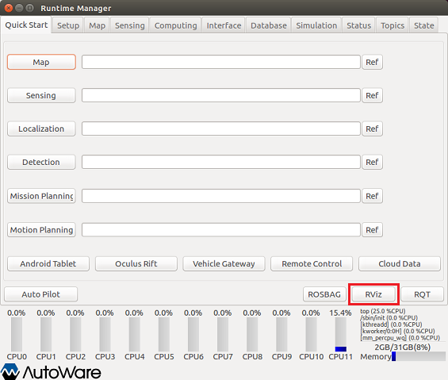
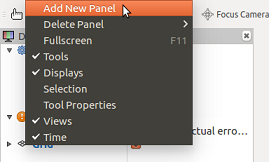
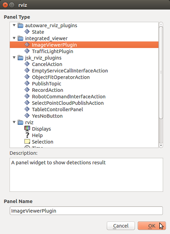
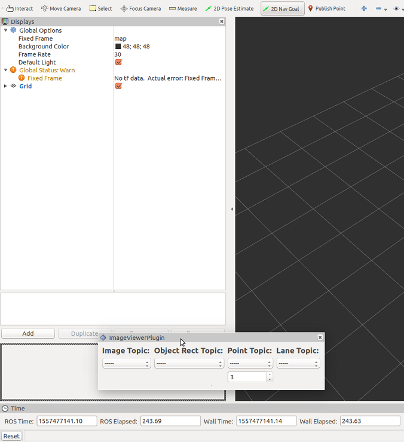
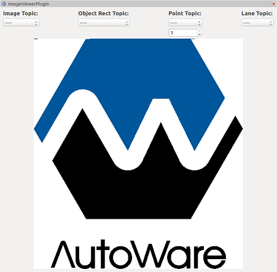
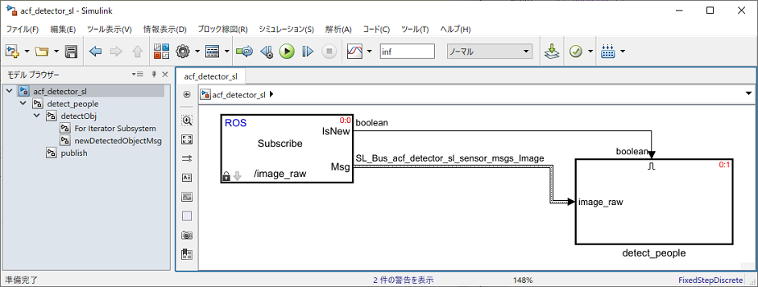
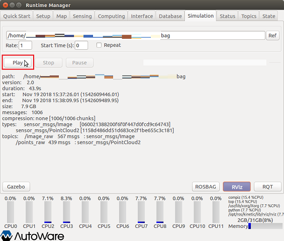
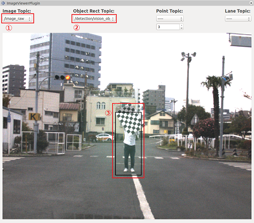

Usage example of acf_detector_sl.slx
Contents
- 1. Run Autoware
- 2. Launch rviz
- 3. Show imageViewerPlugin
- 4. Setting of rosbag file to play video
- 5. Connect MATLAB to Autoware (ROS Master)
- 6. Open ACF Detector（acf_detector_sl.slx） created in Simulink.
- 7. Run ACF Detector created in Simulink
- 8. Play rosbag file
- 9. Topic setting of imageViewerPlugin
- 10. Clean up
1. Run Autoware
Run Autoware.

The Runtime Manager window is launched.

2. Launch rviz
Launch the rviz by clicking the RViz button on the Runtime Manager.

3. Show imageViewerPlugin
When rviz starts, select ［Panels］-［Add New Panel］ from the menu.

Select "imageViewerPlugin".

Adjust the size of the imageViewerPlugin screen.
For example, make the imageViewerPlugin screen float as follows.

Then adjust the screen size.

4. Setting of rosbag file to play video
Open the Simulation tab of the Runtime Manager. Click the "Ref" button to set the rosbag file to play.

5. Connect MATLAB to Autoware (ROS Master)
Connect to the ROS master using the rosinit command in MATLAB. Set the rosinit arguments according to your environment.
rosinit();
6. Open ACF Detector（acf_detector_sl.slx） created in Simulink.
Add the folder containing the acf_detector_sl.slx file to MATLAB search path, open the ACF Detector Simulink model.
acf_detector_sl_folder = fullfile(autoware.getRootDirectory(), ... 'benchmark', 'computing', 'perception', ... 'detection', 'vision_detector', 'acf_detector'); addpath(acf_detector_sl_folder); model = 'acf_detector_sl'; open_system(model);

7. Run ACF Detector created in Simulink
Run the Simulink model.
set_param(model, 'SimulationCommand', 'Start');
8. Play rosbag file
Open the Simulation tab of the Runtime Manager. Click the "Play" button to play rosbag.

9. Topic setting of imageViewerPlugin
- Set the Image Topic of ImageViewerPlugin to "/image_raw".
- Set Object Rect Topic of imageViewerPlugin to "/detection/vision_objects".
- When a person is detected, the Boundary Box is displayed.

The above figure uses the sample data provided in this book.
Click here to check the node graph when this example is executed. The node generated by acf_detctor_sl.slx is "/acf_detector_sl_81473".
{kind=link}
10. Clean up
Execute the following command to finish.
set_param(model, 'SimulationCommand', 'Stop'); close_system(model); rosshutdown(); rmpath(acf_detector_sl_folder); clear('model', 'acf_detector_sl_folder');